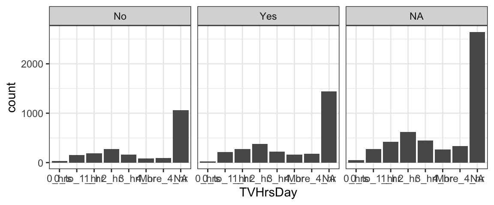

Acknowledgements
This tutorial was created based closely on the “Introduction” tutorial provided with the ggformula package. If desired you can access the original tutorial by running the code below in RStudio.
library(ggformula)
library(learnr)
learnr::run_tutorial("introduction", package = "ggformula")Scatter plots with ggformula
US Births in 1978
The plot below shows the number of live births in the United States each day of 1978. We are going to use it to learn how to create plots using the ggformula package.

Two important questions
To get R (or any software) to create this plot (or do anything else, really), there are two important questions you must be able to answer. Before continuing, see if you can figure out what they are.
The Questions
To get R (or any software) to create this plot, there are two important questions you must be able to answer:
1. What do you want the computer to do?
2. What must the computer know in order to do that?
Answers to the questions
To make this plot, the answers to our questions are
1. What do you want the computer to do?
A. Make a scatter plot (i.e., a plot consisting of points)
2. What must the computer know in order to do that?
A. The data used for the plot:
- The variable to be plotted along the \(y\) axis.
- The variable to be plotted along the \(x\) axis.
- The data set that contains the variables.
We just need to learn how to tell R these answers.
Plotting with Formulas
The Formula Template
We will provide answers to our two questions by filling in the boxes of this important template:
goal ( yyy ~ xxx , data = mydata )
We just need to identify which portions of our answers go into which boxes.
The Name of the Game
It is useful to provide names for the boxes:
goal ( y ~ x , data = mydata , …)
These names can help us remember which things go where. (The ... indicates that there are some additional arguments we will add eventually.)
Other versions
Sometimes we will add or subtract a bit from our formula. Here are some other forms we will eventually see.
# simpler version
goal( ~ x, data = mydata )
# fancier version
goal( y ~ x | z , data = mydata )
# unified version
goal( formula , data = mydata ) 2 Questions and the Formula Template
goal ( y ~ x , data = mydata )
Q. What do you want R to do? A. goal
- This determines the function to use.
- For a plot, the function will describe what sorts of marks to draw (points, in our example).
Q. What must R know to do that? A. arguments
- This determines the inputs to the function.
- For a plot, we must identify the variables and the data frame that contains them.
Assembling the pieces
Template
goal ( y ~ x , data = mydata )
Pieces
| box | fill in with | purpose |
|---|---|---|
goal
|
gf_point
|
plot some points |
y
|
births
|
y-axis variable |
x
|
date
|
x-axis variable |
mydata
|
Births1978
|
name of data set |
Exercise
Put each piece in its place in the template below and then run the code to create the plot.
goal(y ~ x, data = mydata)If you get an “object not found” or “could not find function” error message, that indicates that you have not correctly filled in one of the four boxes from the template.
Note: R is case sensitive, so watch your capitalization.
For the record, here are the first few rows of Births1978.
Using formulas to describe plots
The most distinctive feature of ggformula plots is the use of formulas to describe the positional information of a plot. Formulas in R always involve the tilde character, which is easy to overlook. It looks like this:
~
Make sure you know where the tilde is located on your computer’s keyboard! It is often near the upper left-hand corner on American keyboards.

Formula shapes
Most gf_ functions take a formula that describes the positional attributes of the plot. Using one of these functions with no arguments will show you the “shape” of the formula it requires.
Getting help on formula shapes
Run this code to see the formula shape for gf_point().
gf_point()You should see that gf_point()’s formula has the shape y ~ x, so the \(y\)-variable name goes before the tilde and the \(x\)-variable name goes after. (Think: “y depends on x”. Also note that the \(y\)-axis label appears farther left than the \(x\)-axis label.)
Order matters in formulas!
Reverse the roles of the variables, changing births ~ date to date ~ births. How does the plot change?
gf_point(births ~ date, data = Births1978)Different types of plots
So far, we have created scatter plots using the function gf_point(). But there are many other gf_ functions that create different types of plots. There are also helper functions that can customize axis labels, make multi-panel plots, and more. The following sections will help you explore some of these gf_ functions.
Before getting started, just to get an idea of what is included in the ggformula package, run the code below to get a list of all the gf_ functions that exist (don’t worry - we won’t cover them all today!):
# list all functions starting gf_
apropos("gf_")Histograms
The basics
A histogram can help you visualize the distribution of one quantitative variable. Since only one variable is involved, we will use a simplified formula structure: ~ x.
A new dataset
We will use a new dataset, called NHANES for this example (and many later ones). The NHANES dataset contains measurements from 10,000 human subjects in the National Health and Nutrition Evaluation Survey. To learn more, run the code ?NHANES.
Practice with histograms
Back to histograms! Try the example as-is, then try the variations below…
- Experiment with plotting different variables from the NHANES health dataset. (You can use
?ornames()orstr()to get the variable names and more information.) - The input argument
binsis optional - adjust it to customize the number of bins in your histogram, or leave it out to stick with the default number. - To get density instead of counts on the y-axis, switch from function
gf_histogramtogf_dhistogram.
gf_histogram(~BPSysAve, data=NHANES, bins=30)Density plots
A density plot is a smoothed contour tracing the shape of a dataset’s distribution. The function gf_density produces these plots:
## Warning: Removed 1449 rows containing non-finite values (stat_density).
Unlike histograms, you can overlay density curves for several variables on the same plot to compare them - stay tuned for the “Multiple Layers with %>%” section!
Boxplots
Boxplots, produced using the function gf_boxplot, provide a quick overview of the distribution of a quantitative variable.
(gf_boxplot requires a two-sided formula, so if you want to plot just one quantitative variable you have to replace the \(x\) in the formula with empty quotes “”.)
gf_boxplot(BPSysAve ~ "", data=NHANES)Boxplots are usually most useful to compare the distribution of a variable between several groups.
- Run the code below to see how this works (You’re plotting systolic blood pressure for seven groups who watch different amounts of TV each day).
- Try changing the order of \(x\) and \(y\) in the formula – what happens?
- If you are interested, try different variables. Remember, one must be quantitative (that is what you’ll make boxplots of) and one categorical (that defines the groups).
gf_boxplot(BPSysAve ~ TVHrsDay, data=NHANES)Bar graphs
Bar graphs help visualize the distribution of a categorical variable, and we can create them with gf_bar. Experiment with the example below:
gf_bar(~TVHrsDay, data=NHANES)Sometimes, you may be given data that is already tabulated. Instead of a dataset with one row for every case, you will have one row for every group, and a variable that gives the number of observations in each group. For example, the simple dataset below is pre-tabulated:
We can use the function gf_col to make a bar graph of pre-tabulated data. This function always expects the counts as the \(y\) part of the formula, and the group names as \(x\) (after the tilde).
gf_col(count ~ group, data = D)Custom colors and transparency (Optional)
There were probably things you would like to customize in many of the plots you have created so far. Maybe you might have preferred different colors or sizes of things, or maybe you would like to include custom axis labels or a plot title.
Such global characteristics of a plot can be adjusted with additional arguments to the gf_ function. These go in the ... part of the template.
goal ( y ~ x , data = mydata , …)
The general form for these is option = value.
For example,
color = "red"orfill = "navy"(note quotes) can be used to change the colors of things. (fillis typically used for regions that are “filled in” andcolorfor dots and lines.)alpha = 0.5(or any number between 0 and 1) will set the opacity for the objects being plotted (0 is completely transparent and 1 is completely opaque).
Custom color and transparency
Here are some examples. Adjust color and alpha options to see how things change. We’ve inserted some line breaks to make the options easier to locate in the code.
gf_point(births ~ date, data = Births1978,
color = "navy")gf_point(births ~ date, data = Births1978,
alpha=0.5,
color = "red")gf_point(births ~ date, data = Births1978,
size = 3, shape = 18,
alpha = 0.25, color = "purple")What attributes are available?
You can learn about the options available for a given plot layer using the “quick help” for a gf_ plotting function. You can find out more by reading the detailed help file produced with ?.
The code below will display the “quick help”. Have a look, then change it to use ? and get the full help file.
# "quick help" for gf_point()
gf_point()What are the color names?
Curious to know all the available color names? Run this code.
colors()A guide to R colors is also available online at http://research.stowers.org/mcm/efg/R/Color/Chart/ColorChart.pdf, if you want to preview which color goes with which name.
Multiple layers with %>%
We said that gf_point() creates a plot with points. This isn’t quite true. Technically, it creates a layer with points. A single plot may have multiple layers. For example, you might want a scatter plot with a trend line overlaid on it, or a histogram with a standard normal curve overlaid.
To create a multi-layered plot, simply append %>% at the end of the code for one layer and follow that with another layer. (The %>% symbol is called a “pipe” because it sends the results of one operation on to the next operation for further processing)
Exercise
- If you run the following code as is, you will get two separate plots.
- Combine these two layers into a single plot by appending
%>%at the end of the first line. - Try adding another layer for a third variable.
gf_density(~BPSysAve, data=NHANES)
gf_density(~BPDiaAve, data=NHANES, fill='blue')Linear regression line
Adding a (simple) linear regression line to a scatter plot is a relatively common task, and ggformula provides an easy way to do it with the function gf_lm.
For example, we might investigate whether there is a linear relationship between total cholesterol and weight using the NHANES data:
gf_point(TotChol~Weight, data=NHANES, alpha=0.1) %>% gf_lm()Mapping attributes (Optional)
The births data in 1978 contains two clear “waves” of dots. One conjecture is that these are weekdays and weekends. We can test this conjecture by putting different days in different colors.
In the lingo of ggformula, we need to map color to the variable wday. Mapping and setting attributes are different in an important way.
color = "navy"sets the color to “navy”. All the dots will be navy.color = ~ wdaymaps color towday. This means that the color will depend on the values ofwday. A legend (aka, a guide) will be automatically included to show us which days are which.
Exercise
Change the color argument so that it maps to wday. Don’t forget the tilde (~).
gf_point(births ~ date, data = Births1978, color = "navy")Facets
If we want to look at all 20 years of birth data, overlaying the data is likely to put too much information in too little space and make it hard to tell which data is from which year. (Even with good color and symbol choices, deciphering 20 colors or 20 shapes is hard.) Instead, we can put each year in separate facet or sub-plot. By default the coordinate systems will be shared across the facets which can make comparisons across facets easier.
There are two ways to create facets. The simplest way is to add a vertical bar | to our formula.
gf_point(births ~ day_of_year | year, data = Births, size = 0.5)The second way is to add on a facet command using %>%:
gf_point(births ~ day_of_year, data = Births, size = 0.5) %>%
gf_facet_wrap( ~ year)Practice with facets
Edit the plot below to:
- make one facet for each day of the week (
wday) - map color to
year
gf_point(births ~ day_of_year, data = Births,
size = 0.5, color = "blue")gf_point(births ~ day_of_year | wday, data = Births,
size = 0.5, color = ~ year)Facet Grids and Facet Wraps (Optional)
The faceting we did on the previous page is called facet wrapping. If the facets don’t fit nicely in one row, the facets continue onto additional rows.
A facet grid uses rows, or columns, or both in a fixed way.
Notice that after the | there is now a formula instead of a single variable. Try generating the plot below - can you figure out what the formula does? If you need a hint, try changing year ~ wday to wday ~ year and see what happens…
gf_point(births ~ day_of_year | year ~ wday, data = Births, size = 0.5)The facet grid formula (Optional)
Hopefully, you figured out that the facet grid formula is interpreted as “row variable ~ column variable” – the resulting plot will have one row of facets for every value of the first variable, and one column of facets for every value of the second variable.
Pracice with the facet grid formula
Recreate the plot above using gf_facet_grid(). This works much like gf_facet_wrap() and accepts a formula with one of three shapes
y ~ x(facets along both axes)~ x(facets only along x-axis)y ~ .(facets only along y-axis; notice the important dot in this one)
(These three formula shapes can also be used on the right side of |.)
Customization
You may be wondering how to have more control over things like:
- the colors, shapes, and sizes chosen when mapping attributes
- labeling, including titles and axis labels
- fonts, colors, and sizes of text
- color of plot elements like background, gridlines, facet labels, etc.
As you can imagine, all of these things can be adjusted pretty much however you like. We will cover a few of the most common options here.
Custom labels
One of the most common customizations you will want to make to your plots will be to change the title, subtitle, and axis labels (and maybe add a caption). All these things can be done by chaining (%>%) the function gf_labs() with a plot layer.
Check out the example below, and try changing the text labels to ones that make sense to you. Note that all the input arguments to gf_labs are optional. So, for example, you could alter only the x-axis label by chaining the command gf_labs(x='My X Axis Label') with your plot.
gf_bar(~Race1, data=NHANES) %>%
gf_labs(title = "Race in NHANES Data",
subtitle = "(2009-2012)",
caption = "These data were collected by the US National Center for Health Statistics (NCHS), which has conducted a series of health and nutrition surveys since the early 1960's.",
x = "", # empty quotes here results in no x-axis label!
y = "Number of Observations"
)Custom axis limits
One way to zoom in (or out) is to filter the dataset so that only the data you wish to plot is included.
You can also use gf_lims() to set custom x and y axis limits.
- Try different axis limits to see how the plot changes.
- What happens if you set the min or max value for an axis to NA? (Hint: compare the plot to a plot with no custom axis limits.)
- What happens if you set the axis limits to be c(max, min) instead of c(min,max)?
gf_point(births ~ day_of_year, data = Births1978) %>%
gf_lims(x=c(100,200), y=c(8000,9000))Themes
Using predefined themes
A number of predefined themes exist that control the appearance of non-data elements of plots. In this tutorial, we set the default theme using
theme_set(theme_bw())Other themes include theme_minimal(), theme_classic(), theme_gray(), theme_light(), theme_map(), and theme_quickmap(). The ggthemes package includes some additional themes, including theme_economist(), theme_economist_white(), theme_excel(), theme_fivethirtyeight(), theme_stata(), theme_tufte(), and theme_wsj(). Many of these themes mimic the look of other software packages or of popular publications.
The theme can be set for an individual plot using gf_theme() – for example:
gf_bar(~Race1, data=NHANES) %>%
gf_theme(theme = theme_wsj())
Test some themes
Choose some different themes in place of theme_wsj() and see how the resulting plot changes.
gf_bar(~Race1, data=NHANES) %>%
gf_theme(theme = theme_wsj())Changing text font sizes
Themes have optional arguments. One of the most useful is base_size, which controls the base font size (in points). (base_size is an input argument to the theme, so it goes inside the parentheses after the theme name… ) Try adjusting the font size and theme in the figure below - what theme and size do you think are optimal?
gf_bar(~Race1, data=NHANES) %>%
gf_theme(theme = theme_wsj(base_size=6))Your Turn
If you got this far, maybe it’s time to explore on your own! Here are three data sets you can use.
HELPrcthas data from a study of people addicted to alcohol, cocaine, or heroineKidsFeethas information about some kids’ feet.NHANEShas lots of physiologic and other measurements from 10,000 subjects in the National Health and Nutrition Evaluation Survey.
To find out more about the data sets use ?HELPrct, ?KidsFeet, or ?NHANES. To see the first few rows of the data, you can use head().
To get a list of functions available in ggformula, run this code chunk.
# list all functions starting gf_
apropos("gf_")Exercise.
Make some plots to explore one or more of these data sets.
- Experiment with different types of plots.
- Use mapping and/or facets to reveal groups.
- You can put more than one plot in a code chunk, but we’ve provided two chunks in case you want to separate your work that way. Use one chunk for experimenting and copy and paste your favorites to the other chunk if you like.
gf_point(length ~ width, data = KidsFeet)
head(KidsFeet)
?KidsFeet